日光街道沿いの一軒家で、日本料理をお出ししております。旬の食材とその質にこだわり、修行で身につけた技と伝統を大切にしながら、新しい料理にも取り組んでおります。
お昼は日替わり一種のみ、一日三十食かぎりで1,650円（税込）。ご飯はおひつでお出しし、おかわりは自由でございます。
不定休でございます。お出かけの前にお電話でお確かめいただけますと確実です。お昼のお席はご予約を承っておりませんので、そのままお越しくださいませ。
〒329-0101 栃木県下都賀郡野木町友沼6509-17／駐車場13台／全席禁煙／お支払いは現金のみ
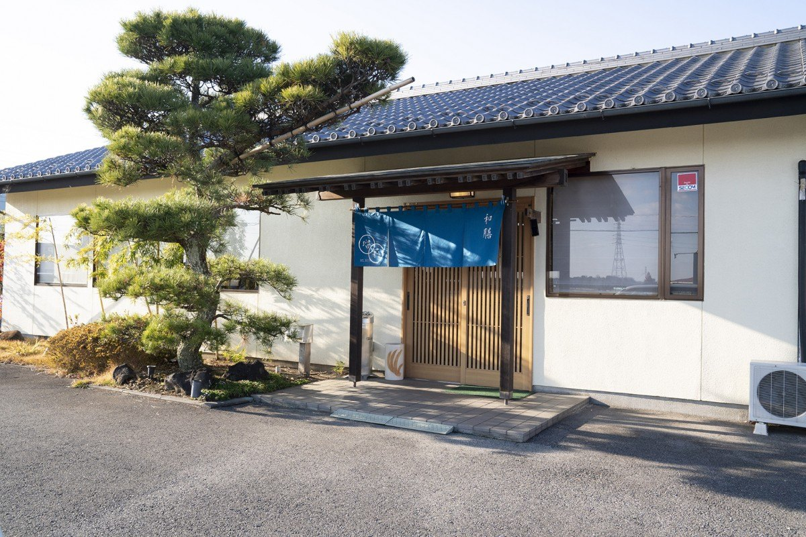
畳のお座敷と、椅子のテーブル席をご用意しております。個室もございますので、まわりをお気になさらずにお過ごしいただけます。お集まりの人数とご用途をお聞かせいただければ、こちらでお席をご用意いたします。
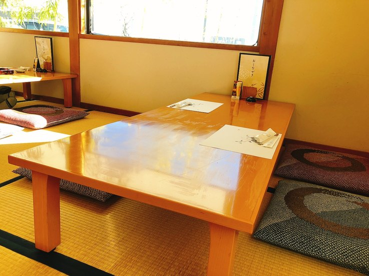
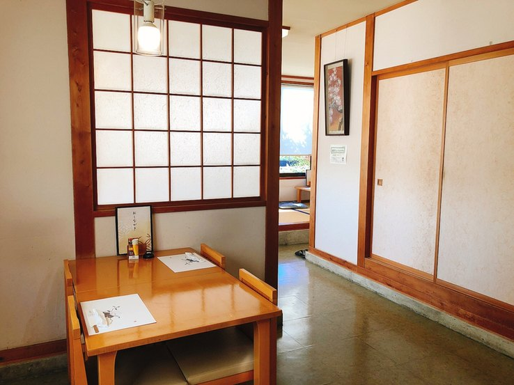
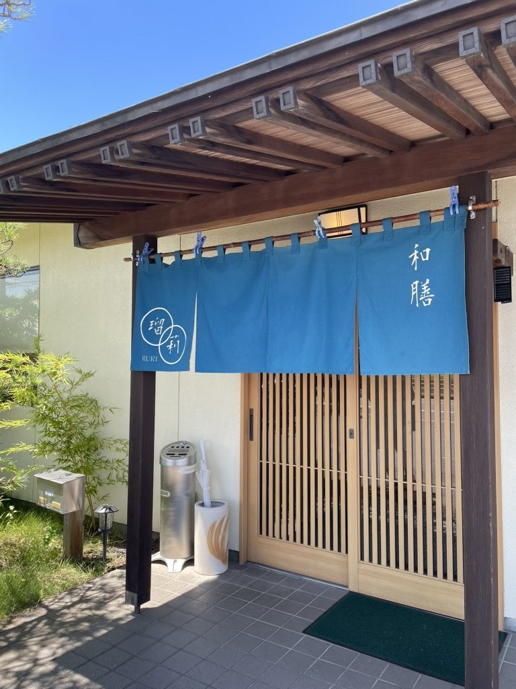
お茶碗によそってお出しするのではなく、木のおひつのままお持ちします。おかわりは自由でございます。お連れさまと分けてお召し上がりいただいても構いません。
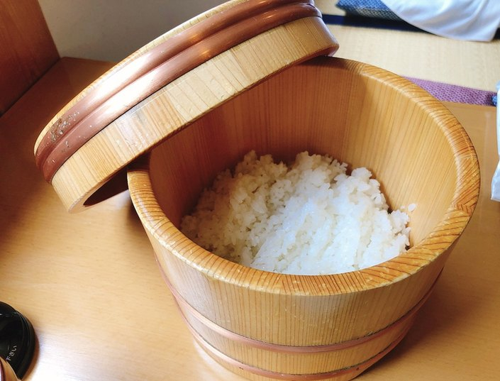
お昼は日替わりの一種のみで、一日三十食かぎりでご用意しております。その日に仕入れられたものでお献立を組みますので、中身は毎日変わります。お造り・揚物・煮物・茶碗蒸し・小鉢・ご飯・汁物・香の物に、食後のコーヒーをお付けしております。
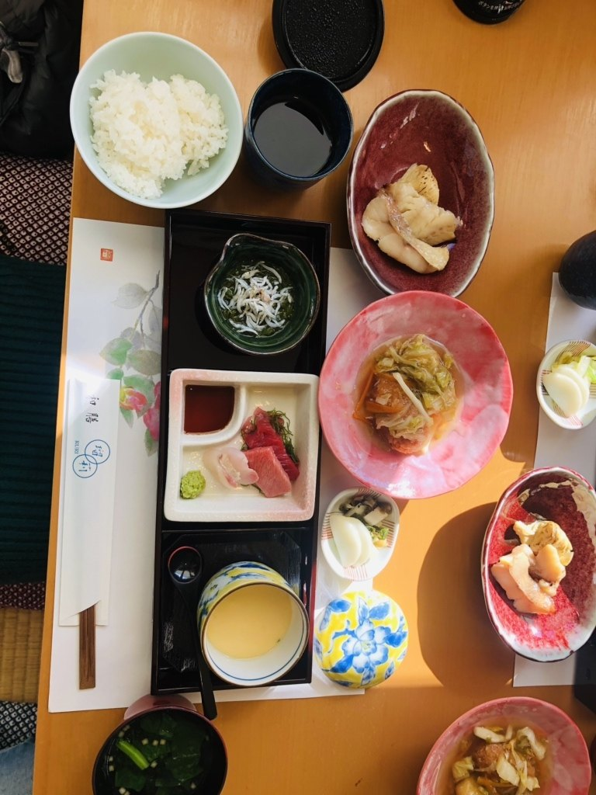
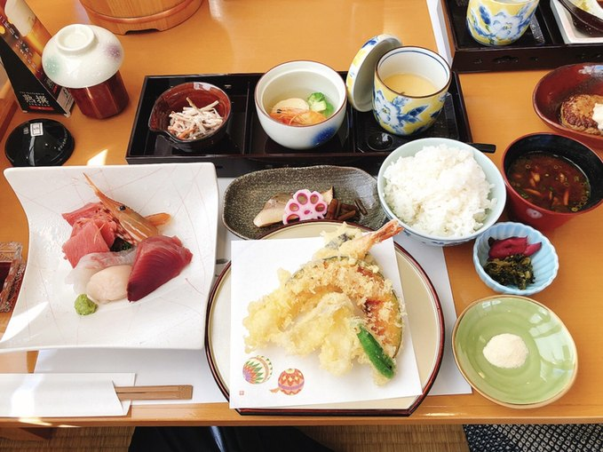
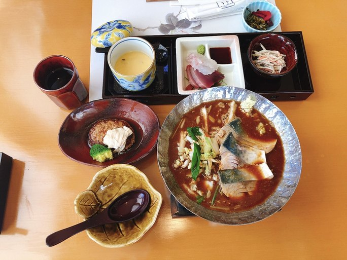
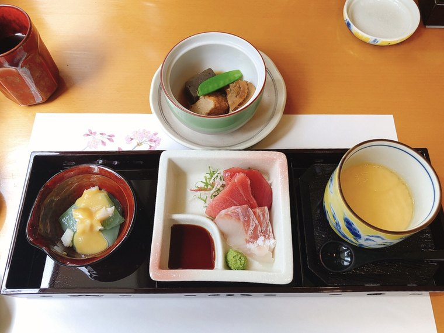
お祝いの席・ご法事・ご接待には、会席をご用意しております。人数とご予算をお聞かせいただければ、お献立を組んでお出しします。お一人ずつのご膳もございますので、お気軽なお食事にもお使いいただけます。
| お品 | お献立 | 金額（税込） | ご予約 |
|---|---|---|---|
| 週替わりの夕餉 | 夜の日替わりでございます。食後のコーヒーをお付けします | 2,640円 | 当日も承ります |
| おまかせ会席 | ご予算とお集まりの趣旨をお伺いして、お献立を組んでお出しします | 5,500円〜 | 前日までに |
| お品 | お献立 | 金額（税込） | ご予約 |
|---|---|---|---|
| 国産牛サーロイン ステーキ会席 |
サーロイン120g。小鉢・茶碗蒸し・煮物・お造り・ご飯・汁物・香の物・水菓子・お飲み物付き | 5,500円 | 当日も承ります |
| 国産牛ヒレ ステーキ会席 |
ヒレ120g。付くお品は上と同じでございます | 6,600円 | 当日も承ります |
| 国産牛シャトー ブリアン会席 |
シャトーブリアン120g。付くお品は上と同じでございます | 7,700円 | 当日も承ります |
| お品 | お献立 | 金額（税込） |
|---|---|---|
| うなぎ重膳 | うなぎの蒲焼をお重で | 3,300円 |
| 牛サーロイン重膳 | 国産牛サーロインをお重で | 3,300円 |
| お刺身膳 | その日のお造りを盛り合わせて | 2,970円 |
| 天ぷら刺身膳 | お造りと揚げたての天ぷらを両方 | 2,970円 |
| 海老天重膳 | 海老の天ぷらをお重で | 1,980円 |
| えび野菜天重膳 | 海老と季節の野菜の天ぷらをお重で | 1,870円 |
| 鳥天重膳 | 鳥の天ぷらをお重で | 1,650円 |
| 野菜天重膳 | 季節の野菜の天ぷらをお重で | 1,540円 |
| お子様セット | 小さなお子様に。ご飯と揚げ物をひとそろえで | 858円 |
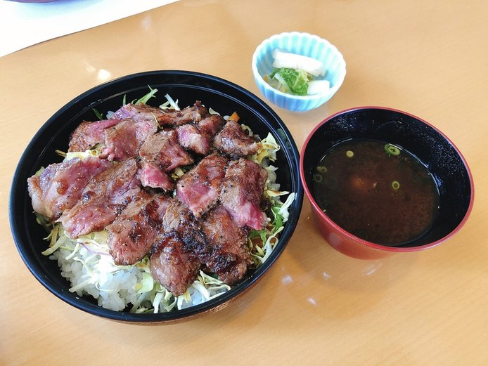
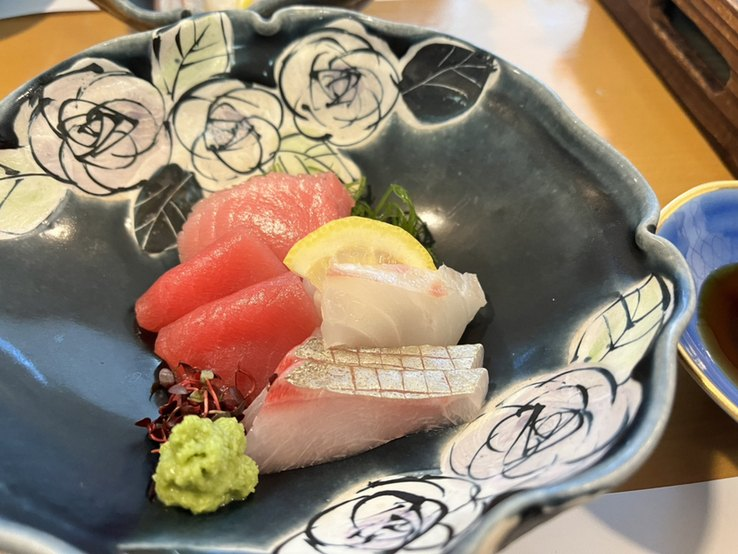
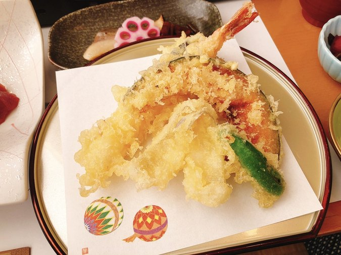
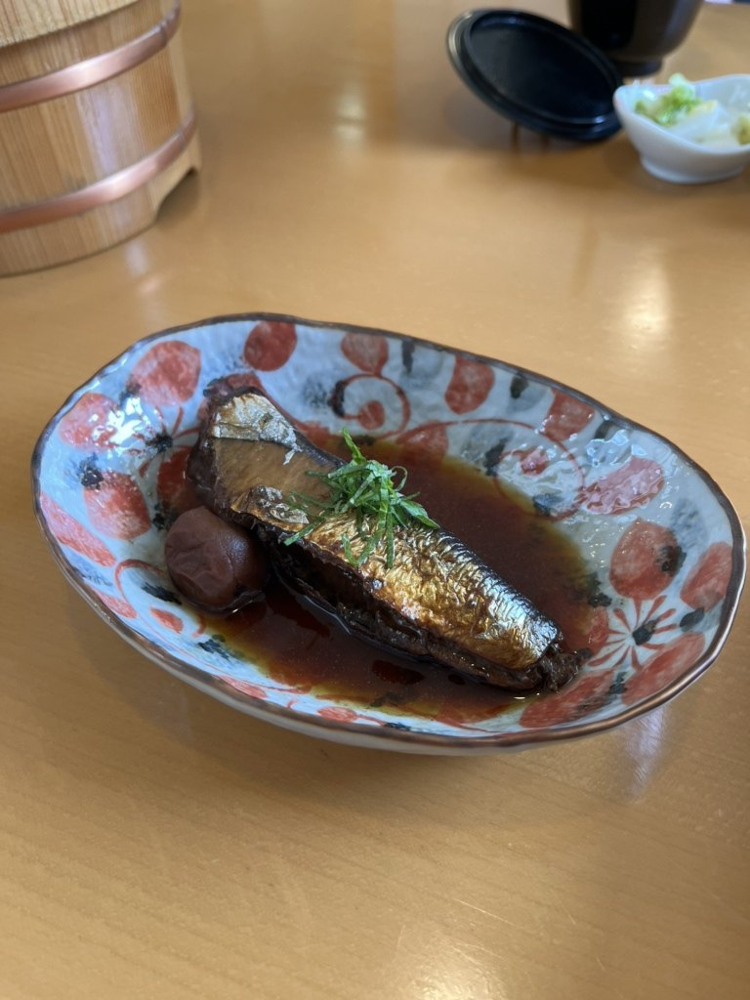
お支払いは現金のみとさせていただいております。あらかじめご用意くださいませ。
お膳のほかに、一品でもお出ししております。冬は牡蠣の小鍋、秋は炊き込みご飯というように、その時季のものをご用意しております。ビール・日本酒などお飲み物もご用意しておりますので、軽くお過ごしいただくこともできます。
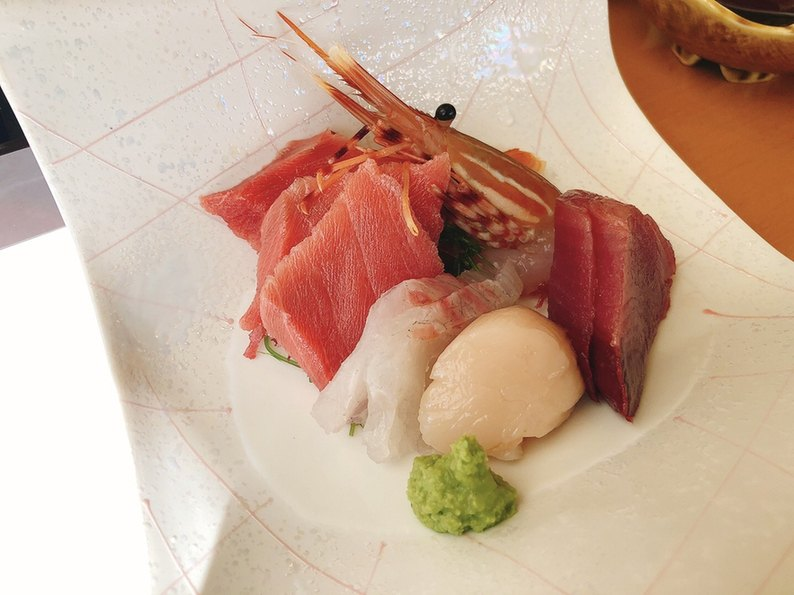
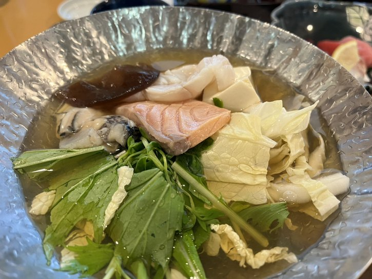
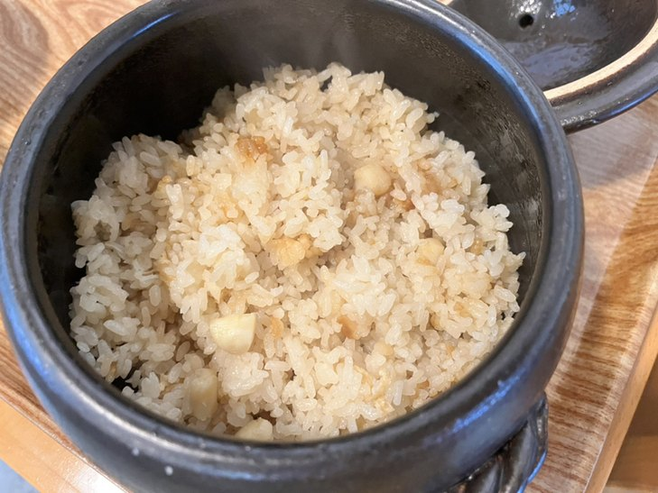
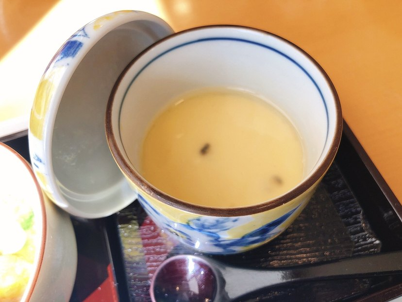
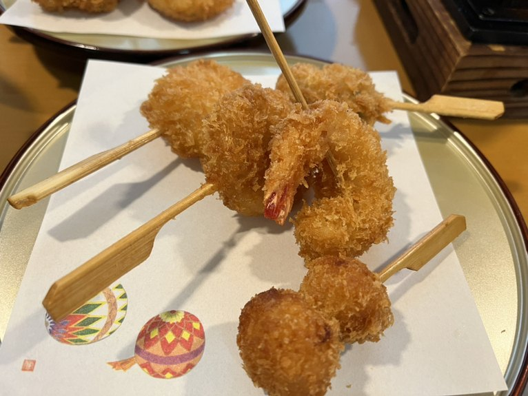
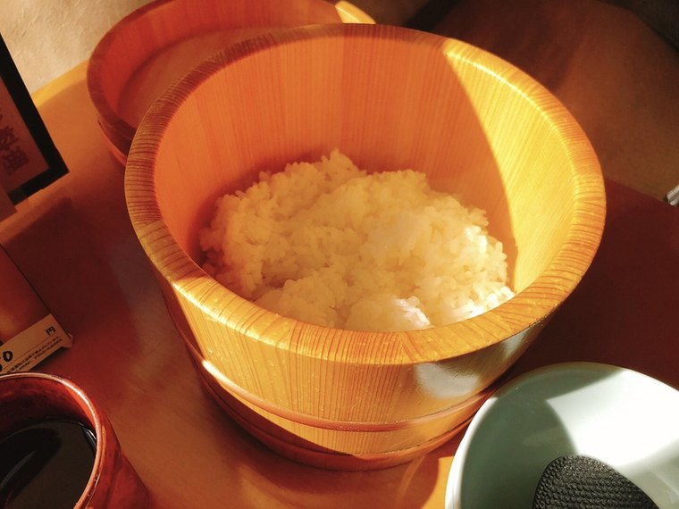
「一品一品が丁寧に作られており とても品のある日本料理やさんでした。ランチにしてこのボリューム、1650円で頂けるのはお得です。」お客様の声より
「特に、おひつで提供されるごはんが美味しくて、めずらしくおかわりしたくらいです。」お客様の声より
「海なし栃木県ですが、お刺身も新鮮でとても美味しかったです！」お客様の声より
日光街道（国道4号）沿いでございます。JR宇都宮線 野木駅の西口からは、お車で3分、歩いておよそ15分です。大きな松と藍色の暖簾を目印にお越しくださいませ。
| 店名 | 和膳 瑠莉（わぜん るり） |
|---|---|
| 住所 | 〒329-0101 栃木県下都賀郡野木町友沼6509-17 |
| 電話 | 0280-23-4121 |
| 営業時間 | お昼 11:30〜14:30 夜 18:00〜21:00（ラストオーダー20:30） |
| 定休日 | 不定休でございます。お出かけの前にお電話でお確かめいただけますと確実です。 |
| ご予約 | 夜のお席は承っております。お昼のお席は承っておりません。 |
| お席 | お座敷・テーブル席・個室／全席禁煙 |
| 駐車場 | 13台 |
| お支払い | 現金でお願いしております |
| アクセス | JR宇都宮線 野木駅 西口から車で3分・徒歩約15分／日光街道沿い |